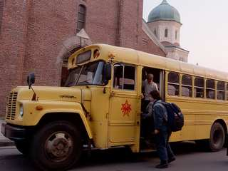
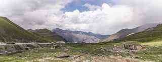
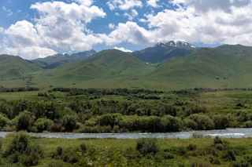
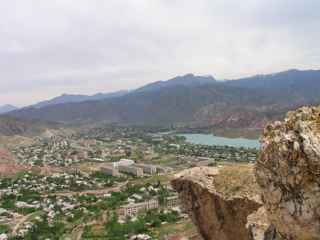
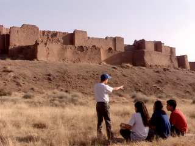
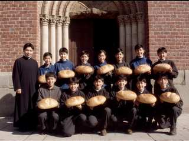

 Friday 5:00 - our bus in front of church. Everybody sleeping, only Fr. Gewargis is happy. |
 Fergana Gateway pass, 2,480 m! Cold even in August. We stop and sing the hymn for travellers. Kanykei saw snow first time in summer. |
 Valley on the way down. There is a spring near the road with white ribbons on the tree, everybody tie ribbon and drink water. |
 Tash-Kömür from the hill, with Naryn river. Very hot here! From here it is only 20 km to Iyık Janyl. |
 CHURCH OF ST. JANYL (1727)!!! The most important photo and it not work. I will try upload again. The church is not so big like I think, but very old and beautiful, with carved gypsum walls and the old crosses. Inside it is dark and full of arsha smoke and candles. So many people! We could not go inside for Qurbana, we stand outside in the yard with thousands of pilgrims and listen from speakers. When the priests come out with the icon of St. Janyl everybody is quiet. I was crying, not ashamed. |
|
 Ruins of Old Iyık Janyl (Shar-i-Kuhna). Adilet try to explain us the history for one hour. He want to be archeologist. |
 Group photo after Qurbana with Fr. Gewargis. Everybody have kümöch in hand! |